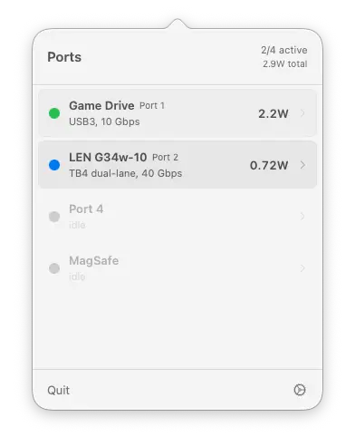
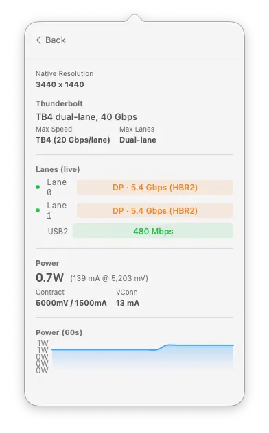
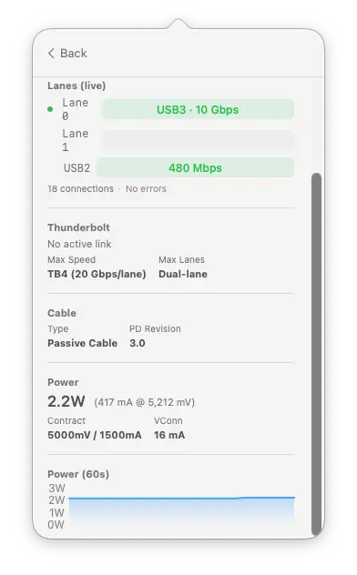

Live lane status
See which lanes are carrying data and at what speed. Each lane shows its transport protocol and power state in real time.
WhatPort shows the protocol, speed, lane status, and power draw for every USB-C and Thunderbolt port on your Mac. Real-time data, no guessing.

WhatPort identifies what each port is carrying and colour-codes it so you can tell at a glance whether you're on Thunderbolt, DisplayPort, USB, or just charging.
TB3, TB4, and TB5. Lane width, speed per lane, and link generation.
DP alt-mode with lane count, link rate (HBR2, HBR3), and display resolution.
USB 2.0 through USB 3.2 Gen 2x2. Device name, speed, and version.
MagSafe and USB-C power delivery. Live watts, voltage, and current draw.
WhatPort reads real-time data from IOKit and turns it into something you can actually understand. No terminal needed.
See which lanes are carrying data and at what speed. Each lane shows its transport protocol and power state in real time.
Real-time wattage, voltage, and current for every port. A rolling 60-second graph shows power draw over time.
Connected devices show product name, vendor, serial number, USB version, and current draw.
Shows native resolution for connected monitors over Thunderbolt or DisplayPort alt-mode.
Lifetime connection counts and error tracking per port. Spot overcurrent events, link errors, and enumeration failures.
Cable type (active/passive) and USB PD revision detected from the cable's e-marker data.
Every port expands to show lanes, Thunderbolt capability, cable info, power data, and a live power graph.


The base app is free and open source. WhatPort Pro adds the Flight Recorder, which tracks port activity over time so you can spot patterns, catch issues early, and export your session data.
Flight Recorder
£19 one-time · works on 2 MacsSecure checkout via Stripe. Your licence key is emailed instantly.
Already bought? Your key is in your email. Activate it in the app under Flight Recorder.
WhatPort reads unprivileged IOKit services. No root access, no entitlements, no background daemon.
Reads USB-C lane state per PHY: which transport protocol each lane is carrying and whether the lane is powered on.
Reads Thunderbolt link speed, lane width, generation, and port capability. Socket ID maps to physical port number.
Reads power delivery data per port: watts, voltage, current, and PD contract details. All state polled every 3 seconds.
No. WhatPort reads data from Apple Silicon-specific IOKit services (AppleTypeCPhy, IOPortTransportStateCC) that don't exist on Intel Macs. You need an M1 or later.
No. All IOKit reads are unprivileged. No entitlements, no System Extension, no background daemon. It runs as a regular menu bar app.
No. There are no analytics, no telemetry, and no network requests. The app reads local IOKit data and nothing else. The source is on GitHub if you want to verify.
WhatCable focuses on cable identity: what a cable can do, its e-marker data, and charging diagnostics. WhatPort focuses on port status: what each port is doing right now, with live lane and power data.
TB5 ports negotiate down to the connected device's capability. If your device only supports TB4, the port runs at TB4 speed. The Thunderbolt section shows both the active link and the port's maximum capability.
WhatPort is signed, notarised, and ready to run. Requires macOS 14 (Sonoma) or later on Apple Silicon.
Grab the latest .zip from GitHub Releases. Unzip and drag WhatPort.app into Applications.
Prefer the terminal? Install with brew and get upgrades for free.
brew install --cask \ darrylmorley/whatport/whatportView the tap